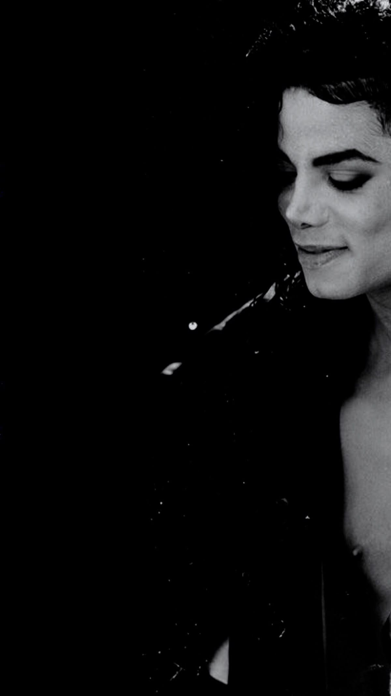

Michael Jackson iniciou sua trajetória artística ainda na infância, como integrante do grupo The Jackson 5.
Seu talento chamou atenção rapidamente, e ele se tornou o principal destaque do grupo. Com o passar dos
anos, Michael iniciou uma carreira solo de enorme sucesso, conquistando fãs no mundo inteiro. Em 1982,
lançou o álbum Thriller, que se tornou um marco na história da música e um dos discos mais vendido de
todos os tempos. O videoclipe de “Thriller” revolucionou a indústria musical ao misturar dança, cinema e
efeitos especiais, tornando-se um símbolo da cultura pop.Michael Jackson também ficou famoso por seus
passos de dança inovadores, principalmente o “moonwalk”, movimento apresentado ao público em 1983,
que dava a impressão de que ele deslizava para trás enquanto caminhava para frente. Outro momento
marcante de suas apresentações foi o “anti-gravity lean”, inclinação corporal impressionante criada para
o clipe e performances da música “Smooth Criminal”. Para realizar o efeito, Michael utilizava sapatos
especiais desenvolvidos com tecnologia própria.Conhecido como o “Rei do Pop”, Michael Jackson deixou
um legado inesquecível na música, na dança e no entretenimento, influenciando artistas de várias
gerações até hoje.
